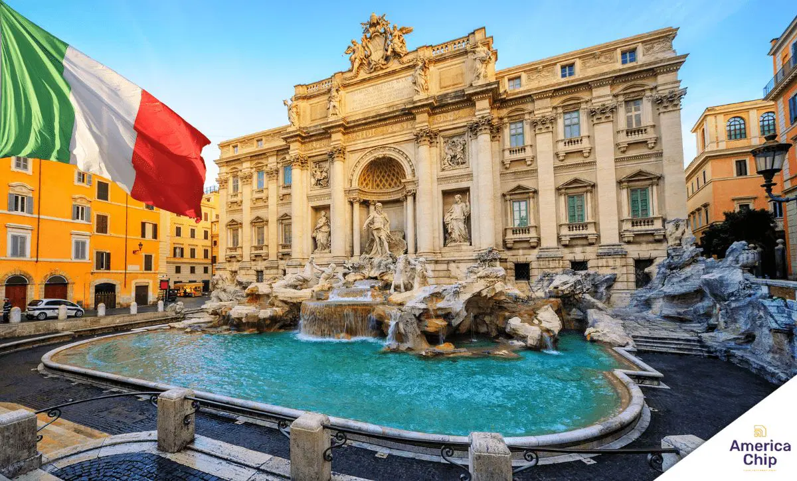

Coliseu
O Coliseu é um anfiteatro oval antigo no centro de Roma, conhecido por suas lutas de gladiadores e eventos esportivos. É um dos locais mais icônicos da Roma Antiga.

Fontana di Trevi
A Fontana di Trevi é uma famosa fonte em Roma, conhecida por suas esculturas impressionantes e por ser um local tradicional para lançar moedas e fazer pedidos de retorno à cidade.

Panteão
O Panteão é um antigo templo romano que agora serve como uma igreja. É famoso por sua cúpula de concreto e oculus no topo, permitindo a entrada de luz.